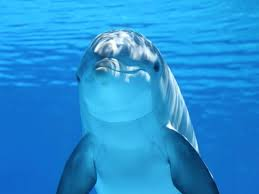

Dolphins are highly intelligent marine mammals that belong to the order Cetacea, which also includes whales and porpoises. They are found in oceans and seas around the world, from tropical to temperate waters, and some species even inhabit freshwater rivers. Dolphins are known for their playful behaviour, often riding the bow waves of boats and leaping high out of the water. They communicate using a sophisticated system of clicks, whistles, and body movements that researchers are still working to fully understand. A group of dolphins is called a pod, and these social creatures rely on their pod for protection, hunting, and companionship throughout their lives. Bottlenose dolphins are among the most well-studied species and are commonly seen in coastal waters. They have a lifespan of up to 40 to 50 years in the wild and are capable of diving to depths of over 300 metres. Dolphins feed primarily on fish and squid, using a technique called echolocation to detect prey even in murky or dark water. Their streamlined bodies allow them to swim at speeds of up to 37 kilometres per hour, making them one of the fastest creatures in the ocean. Scientists have observed dolphins using tools, such as marine sponges, to protect their snouts while foraging on the seafloor, which is a rare behaviour seen in very few non-human animals. Conservation efforts around the world aim to protect dolphin populations from threats such as fishing nets, pollution, and habitat loss caused by human activity.
In many coastal regions, dolphins play an important role in the local ecosystem by helping keep fish populations balanced and by acting as indicators of ocean health. Their bodies are built for efficient movement: a powerful tail provides thrust, while their dorsal fin helps with stability as they turn and accelerate. Some species migrate seasonally to follow food or warmer water, while others stay close to bays and estuaries where prey is abundant. Dolphins are also known for forming long-term social bonds, and they may cooperate in groups to herd fish into tight bait balls before feeding. Researchers continue to study dolphin communication and learning, hoping to better understand how pods share knowledge across generations.